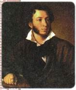
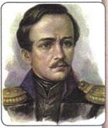
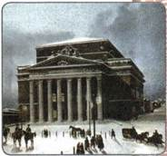
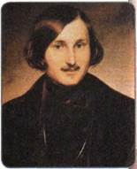
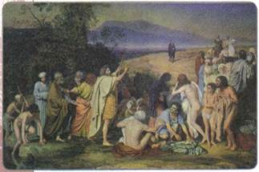
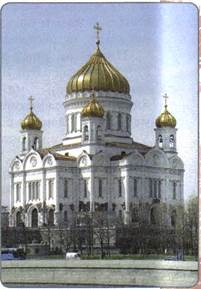
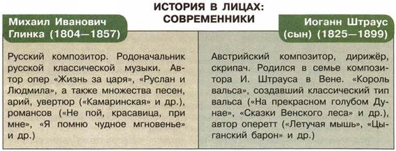

Материал для самостоятельной работы и проектной деятельности учащихся
Почему XIX век называют золотым веком русской культуры?
1. Особенности художественной культуры первой половины XIX в.
Главными особенностями художественной культуры первой половины XIX столетия явились быстрая смена различных художественных стилей, их параллельное существование. На рубеже веков господствовал классицизм, в основе которого лежала идея служения государю и Отечеству. В период, предшествовавший Отечественной войне 1812 г., приобрёл популярность сентиментализм, обращённый к внутреннему миру человека, его чувствам и переживаниям. Его сменил романтизм, возникший в переломный период борьбы с Наполеоном. В романтизме отразилось противопоставление некоего возвышенного, идеального образа реальной действительности.
Отличительным признаком русского романтизма был повышенный интерес писателей и художников к национальной самобытности, традициям отечественной истории, утверждение героики протеста, свободолюбивой личности.
Во второй четверти XIX в. получило распространение ещё одно направление — реализм. Его последователи старались отображать в своих произведениях действительность в её наиболее типических проявлениях. Одной из разновидностей нового стиля стал критический реализм, представители которого фиксировали неблагополучные стороны жизни и самим содержанием своих произведений ратовали за перемены к лучшему.
2. Литература
Русская литература переживала свой золотой век. Наиболее ярким представителем сентиментализма был Н. М. Карамзин («Бедная Лиза» и др.). Появление романтизма в русской литературе было связано прежде всего с произведениями В. А. Жуковского (1783—1852). В его балладах «Людмила», «Светлана» представлен мир народных поверий и легенд, далёких от реальной жизни, душевные переживания героев. В исторических повестях А. А. Бестужева-Марлинского действуют наделённые высокими чувствами романтические герои. Исторические романы М. Н. Загоскина («Юрий Милославский» и др.) формировали у читателя представление о самобытности русской истории. Романтические образы составляют основу ранних поэтических произведений А. С. Пушкина (1799—1837) и М. Ю. Лермонтова (1814—1841).
Реализм как новое течение в русской литературе был связан с наиболее зрелыми работами Пушкина («Борис Годунов», «Путешествие в Арзрум» и др.). Поэт был «явлением чрезвычайным» в русской литературе, оказавшим огромное влияние на всё её последующее развитие.

А. С. Пушкин. Художник В. А. Тропинин
Александр Сергеевич Пушкин (1799—1837)
Великий русский поэт, драматург, писатель. Считается основателем новой русской литературы. Учился в Царскосельском лицее. В ранние годы был дружен с декабристами и поддерживал их идеи, но в декабристских тайных обществах не принимал участия. В правление Николая I цензура пристально следила за его произведениями. А. С. Пушкин — автор множества произведений, вошедших в сокровищницу мировой литературы (поэмы «Евгений Онегин», «Медный всадник», «Полтава» и др., повесть «Пиковая дама», множество стихов, стихотворных сказок и др.), создатель «Литературной газеты» и журнала «Современник», в которых он был и редактором, и автором. Язык Пушкина, сочетающий книжные нормы с живым разговорным языком, остаётся до сих пор основой русского литературного языка. Творчество Пушкина оказало влияние на деятельность многих поколений писателей и поэтов.

М. Ю. Лермонтов
С выходом в свет романа «Герой нашего времени» в 1840 г. слава одного из основоположников критического реализма закрепилась за Лермонтовым. В творчестве Н. В. Гоголя реальная жизнь, с её печальными и смешными сторонами, соседствовала с мистицизмом и фантастикой. Сопричастностью и состраданием к простым людям проникнуты роман «Обыкновенная история» И. А. Гончарова, ранние стихи Н. А. Некрасова, «Записки охотника» И. С. Тургенева, повести «Бедные люди», «Белые ночи» и «Двойник» Ф. М. Достоевского. Мир русского купечества открыл читателю и зрителю в 1849 г. в первой своей социальной комедии «Свои люди — сочтёмся» начинающий в ту пору драматург А. Н. Островский.
Литература начала оказывать мощное воздействие на духовную жизнь российского общества, формируя мировоззрение мыслящей части общества.
3. Театр
Построенный в 1780 г. в Москве публичный Петровский театр (название произошло от улицы Петровка) был рассчитан на тысячу мест. Здесь шли постановки и музыкальных, и драматических спектаклей. В 1805 г. здание театра сгорело, на его месте в 1824 г. архитектором
О. И. Бове было построено новое. Этот театр был назван Большим Петровским (позднее просто Большой театр), в нём отныне ставились опера и балет. Драматическая труппа в том же 1824 г. была переведена в другой театр (Малый театр). Помимо публичных, открытых для всех театров, существовали крепостные театры при домах богатейших дворян (театр Шереметевых, крепостной театр Дурасова и др.).
В Петербурге наиболее известным был Александрийский драматический театр. В отличие от традиционно демократичного московского Малого, этот театр, предназначенный не для широкой публики, а главным образом для двора и чиновничества, носил парадно-официальный характер.
Из драматургов наиболее популярны были А. С. Грибоедов и Н. В. Гоголь, утверждавшие реалистические традиции в театральном искусстве. Их пьесы ставились в Малом театре.
Крупнейшим представителем романтизма в театре был выдающийся русский актёр П. С. Мочалов, снискавший особую популярность в ролях Гамлета (в трагедии У. Шекспира) и Фердинанда (в драме Ф. Шиллера «Коварство и любовь»). Основоположником реализма на русской сцене стал великий актёр Малого театра М. С. Щепкин, подлинный реформатор русского театра (он первым предложил подчинить весь творческий процесс на сцене единой идее, разработал метод сценического творчества, основанный на обобщении широких жизненных наблюдений). С этого же времени начинается становление режиссуры и искусства оформления спектакля.

Большой театр в Москве. Литография первой половины XIX в.

Н. В. Гоголь. Художник Ф. А. Моллер
4. Музыка
Музыка больше, чем другие виды искусства, испытала на себе влияние героического 1812 года. Если прежде традиционно преобладала бытовая опера, то теперь композиторы обратились к героическим сюжетам исторического прошлого России. Одной из первых в этом ряду стала опера К. А. Кавоса «Иван Сусанин», поставленная в 1815 г. Романтическое направление в музыкальном искусстве представлял также А. Н. Верстовский, автор популярной оперы «Аскольдова могила» по сюжету романа М. Н. Загоскина.
Центральное место в русском искусстве первой половины XIX в. принадлежит М. И. Глинке, заложившему основы национальной школы в музыке. М. И. Глинка — основоположник русской классической музыки. Оперы Глин ки «Жизнь за царя» и «Руслан и Людмила» положили начало двум направлениям русского оперного искусства — народной музыкальной драме и опере-сказке.
Большой социальной напряжённостью отличается творчество другого выдающегося композитора — А. С. Даргомыжского. Его главное произведение — опера «Русалка» по сюжету А. С. Пушкина — продолжило традиции жанра народной музыкальной психологической драмы, основанного Глинкой.
Большие аудитории собирали концертные залы. Популярностью пользовались музыкальные вечера в салонах А. А. Дельвига, В. Ф. Одоевского,
3. А. Волконской.
5. Живопись
Изобразительное искусство эпохи романтизма характеризовалось в первую очередь интересом художников к изображению духовного мира человека. Одним из наиболее распространённых жанров живописи в начале XIX в. стал романтический портрет. Ярким представителем романтизма в живописи был О. А. Кипренский, запечатлевший образы А. С. Пушкина, В. А. Жуковского и др. Ранние работы А. К. Айвазовского также проникнуты настроениями романтизма.
Классицизм в русской живописи представлен в пейзажах Ф. М. Матвеева, некоторых работах К. П. Брюллова. Драматической напряжённостью образов отличается картина Брюллова «Последний день Помпеи», в жанре парадного портрета написана «Всадница».
Одним из крупнейших мастеров русской живописи был А. А. Иванов. Главным произведением его жизни стала картина «Явление Христа народу», над созданием которой художник трудился 20 лет. Каждый из множества персонажей, изображённых на картине, индивидуален и по-человечески неповторим.

Явление Христа народу. Художник А. А. Иванов
Родоначальником критического реализма в русской живописи стал П. А. Федотов. Художник ввёл в бытовой жанр драматические сюжеты («Свежий кавалер», «Анкор, ещё анкор!», «Завтрак аристократа»), а также поэтическое восприятие обыденной жизни, добрый юмор («Сватовство майора»).
Рождение особенно популярного в XIX в. народно-бытового жанра связано с творчеством А. Г. Венецианова. Его картины стали настоящим открытием в русской живописи. Художник изображал повседневную жизнь крестьян в поэтических красках, тонко чувствуя и передавая красоту родной природы («На пашне. Весна», «На жатве. Лето», «Спящий пастушок», «Гумно» и др.).
Важнейшими центрами подготовки художников, архитекторов и скульпторов были высшие учебные заведения: Академия художеств в Петербурге (основанная ещё в 1757 г.) и Училище живописи, ваяния и зодчества в Москве (открытое в 1832 г.).
6. Архитектура
В первые три десятилетия XIX в. здесь господствовал стиль ампир (от фр. empire — империя). Так называют стиль позднего классицизма, для которого характерны массивные, монументальные формы с богатыми украшениями, подражающие Древнему Риму периода империи.
Памятники ампира в Петербурге проникнуты идеей торжества и независимости русского государства, величия империи. В российской столице А. Д. Захаров возвёл здание Адмиралтейства, А. Н. Воронихин (бывший крепостной графов Строгановых) построил Казанский собор, участвовал в строительстве дворцово-парковых ансамблей Павловска и Петергофа, положил начало ансамблю Невского проспекта.
По проекту талантливого архитектора К. И. Росси в Петербурге построены Михайловский дворец (ныне здание Русского музея), ансамбль Дворцовой площади со зданием Генерального штаба и аркой, Александрийский театр с Театральной улицей (ныне улица Зодчего Росси) и др.
В Москве многие сооружения, реконструированные после пожара 1812 г., имеют характерные черты ампира. В этом стиле работал Д. И. Жилярди, который возвёл здания Московского университета, Екатерининского института и др. Архитектор О. И. Бове создал ансамбль Большого театра и Театральной площади, возвёл Триумфальные ворота (разобраны в 1932 г., восстановлены в 1968 г. на Кутузовском проспекте).
Создатель русско-византийского стиля К. А. Тон работал над проектом храма Христа Спасителя, построил Большой Кремлёвский дворец и здание Оружейной палаты, а также здания вокзалов в Москве и Петербурге.

Храм Христа Спасителя в Москве. Архитектор К. А. Тон. Реконструкция 1990-х гг.
7. Художественная культура национальных регионов России
Первая половина XIX в. стала временем зарождения новой литературы народов России. Её представители выступали в этот период и как представители национальных движений.
Поляк А. Мицкевич, наиболее яркий представитель романтизма, сочетал в своём творчестве идеи независимости, стремление к свободе, служение своему народу и родине. Национальной классикой стали его поэмы «Дзяды» и «Пан Тадеуш».
Другой польский поэт — Ю. Словацкий, покинувший родину после неудачи Польского восстания 1830—1831 гг., в своих произведениях критикует польское дворянство за их действия, фактически приведшие Польшу к утрате независимости.
Народные фольклорные традиции и талантливая музыка соединились в творчестве композитора Ф. Шопена. Он заложил основы польской классической музыки.
Украинец Т. Г. Шевченко боролся за развитие национальной украинской культуры. Родившись в семье крепостных крестьян, он был выкуплен на волю художником К. П. Брюлловым и смог поступить в Петербургскую академию художеств. Шевченко сочетал в себе талант художника и поэта. Его произведения «Кобзарь», «Гайдамаки» и др. получили широкую известность. Их он создавал как на русском языке, так и на малороссийском наречии.
Развивалась и еврейская художественная культура. На её развитие повлияла одна из главнейших проблем еврейского народа — отношение к «сохранению нации». Здесь господствовали две точки зрения. Первую отстаивали религиозные деятели, которые говорили, что еврейский народ должен сохранять обособленность своей культуры (религии, языка, быта, традиций, одежды и т. п.) от культуры народов тех стран, в которых он проживает. Вторую, противоположную точку зрения выражали светские мыслители. По их мнению, евреям нужно активно ассимилироваться с населением, сотрудничать с ним и на культурном, бытовом, и на политическом уровне. Так, они ратовали за необходимость обучения в светских, а не религиозных школах.
Писатели, поддерживавшие идеи ассимиляции, создавали свои произведения на идише. Это Шлойме Этингер, Менделе Мойхер-Сфорим («Менделе-книгоноша») и др. Они противопоставляли ивриту (древнему еврейскому языку) идиш (язык германской группы, который сложился в результате слияния немецких диалектов с древнееврейскими элементами языка).
Вопросы национального языка также волновали армянских культурных деятелей. С 1820-х гг. в армянской литературе началась борьба между сторонниками использования в качестве языка литературы древнеармянского и новоармянского языка. Победу новоармянского литературного языка ознаменовал роман «Раны Армении». В нём автор X. Абовян живописал современные ему исторические события: борьбу с Ираном и переход Армении под покровительство России.
После присоединения к России местная культура обогатилась за счёт связей с русской и западной художественной культурой. Здесь творили художники А. Овнатанян, С. А. Нерсесян. Армянское происхождение имел всемирно известный художник-маринист И. К. Айвазовский (настоящее имя Ованес Айвазян).
Художественная культура татар Волго-Уралья развивалась, с одной стороны, в рамках исламской культуры, с другой — под воздействием европейской культуры. Роль религиозных традиций была сильна, ислам стал фактором этнического, общенационального самосознания. Образы татарского искусства регламентировались строгими установками ислама суннитского толка. Например, отвергались изображения живых существ и человека. Отличительной чертой татарской художественной культуры было использование арабской письменной графики, цитат из Корана. На этой основе высокого развития достигла каллиграфия — искусство утончённого письма.

ПОДВЕДЁМ ИТОГИ
На развитие художественной культуры различных этносов империи оказывало влияние несколько факторов: общий культурный подъём XIX в. в Европе и в России, рост национального самосознания народов, разный уровень социально-экономического развития народов, взаимовлияние европейской, русской и национальных культур. С одной стороны, вторая четверть XIX в. стала временем становления академических, профессиональных традиций в художественной культуре народов России, а с другой — ярко проявились индивидуальные черты, обусловленные национальной самобытностью.
Вопросы и задания для работы с текстом параграфа
1. В чём состояли важнейшие особенности развития художественной культуры России в первой половине XIX в.? 2. Приведите примеры произведений литературы, написанных в стиле сентиментализма, романтизма и реализма. 3. Перечислите произведения А. С. Пушкина, А. С. Грибоедова, Н. В. Гоголя, написанные специально для театра. 4. Что принципиально нового произошло в развитии музыкального искусства? 5. Назовите известные здания, возведённые в стиле классицизма в первой половине XIX в. Каковы основные черты этого стиля?
Думаем, сравниваем, размышляем
1. Чем было вызвано, на ваш взгляд, появление и быстрое распространение романтизма в художественной культуре? Почему вскоре его сменил реализм?
2. Почему литература оказывала огромное влияние на духовную жизнь русского общества? 3. Чем можно объяснить, что «купеческая тема» в русской литературе появилась лишь к середине XIX в.? 4. Подготовьте сообщение об одном из деятелей культуры, упомянутых в параграфе. 5. Используя дополнительную литературу и Интернет, узнайте, какие постановки шли в музыкальных театрах в первой половине XIX в.
Запоминаем новые слова
Ассигнации — бумажные деньги в XVIII—XIX вв., имевшие хождение наравне в серебряным рублём.
Жандармерия — полиция, имеющая военную организацию и выполняющая охранные задачи внутри страны и армии.
«Капиталистые» крестьяне — крестьяне, имевшие капитал (деньги, которые вкладывают в производство) и занимавшиеся предпринимательством. Классицизм — художественный стиль в европейском и русском искусстве XVII—XIX вв., одной из важнейших черт которого было обращение к формам античного искусства как к идеальному эстетическому эталону. Национальное самосознание — осознание представителями народа своего духовного, экономического, политического единства. Протекционизм — политика защиты государством своего внутреннего рынка, ограждения его от иностранных товаров.
Разночинцы — «люди разного чина и звания», межсословная категория населения в России XVIII—XIX вв.; выходцы из духовенства, купечества, мещанства, крестьянства, обедневшего дворянства. Как правило, мелкие чиновники, студенты, люди интеллектуальных профессий.
Теория утопического социализма — принятое в исторической и философской литературе обозначение учения о возможности преобразования общества на социалистических принципах, социальной справедливости, свободы и равенства ненасильственным способом, силой пропаганды и примера.
ПОВТОРЯЕМ И ДЕЛАЕМ ВЫВОДЫ
1. Назовите последствия выступления декабристов. Выскажите своё отношение к событию, произошедшему 14 декабря 1825 г. на Сенатской площади в Петербурге.
2. Каковы были особенности управления территориями Польши, Финляндии, Прибалтики, украинскими и белорусскими землями в рамках Российской империи во второй четверти XIX в.?
3. Что такое Восточный вопрос? Какую роль он играл во внешней политике России?
4. Расскажите о главных этапах и ходе Крымской войны. Каковы были результаты войны для Российской империи?
5. Как развивалась система образования в России в первой половине XIX в.? Перечислите главные типы учебных заведений.
6. Перечислите стили, свойственные художественной культуре первой половины XIX в. Назовите характерные особенности каждого из стилей.